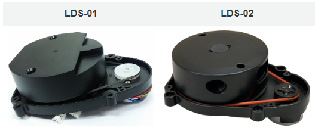

üîß Robot Setup#
This guide will walk through the steps to install Ubuntu Server 22.04 LTS, ROS2 Humble, and all dependencies on a Raspberry Pi 4B. This Pi is then embedded within the Robotis TurtleBot3 Burger along with a USB camera. The robotics system, TurtleBot3, is utilized in the United States Air Force Academy’s Electrical and Computer Engineering department to teach undergraduate students robotics.
This guide is adapted from the TurtleBot3 e-Manual.
Created by Steve Beyer, 2022
Updated by Stan Baek, 2023
TurtleBot3#
Below is a list of recommended hardware and links. Other off-the-shelf components can replace the ones below.
USB Camera (Any USB Cam will work, this is the one we use)
128 GB High Speed MicroSD card
Monitor, mouse, and keyboard
If using an older version of the TurtleBot3 with a Jetson Nano or Raspberry Pi 3B+ you will need ot purchase a Raspberry Pi 4 Model B (preferably with 8 GB of RAM))
Hardware Assembly#
Follow the Robotis e-Manual for hardware assembly stopping after installing the Raspberry Pi.
Raspberry Pi#
A Raspberry Pi 4 B with 8 GB of RAM is used throughout this curriculum. Ensure heat sinks are propertly installed on the Pi such as these from CanaKit.
Also, a small fan can be installed to help with cooling. We used this 3D printed bracket to mount the fan.

Camera#
After installing the Raspberry pi level of the TurtleBot3 you need to install the USB Camera Mount prior to finishing the robot build. The mount used in this course can be found in the curriculum material and is installed on two of the front standoffs on the TurtleBot3.
{kind=link}
Ubuntu Installation#
Download Ubuntu and flash MicroSD card#
There are multiple ways to download and install Ubuntu 22.04.5 to a MicroSD card, but the Raspberry Pi Imager is one of the easiest. Instructions for installing the imager on your operating system can be found on the Raspberry Pi OS software page.
Once installed, start the imager and select “Raspberry Pi 4”.

Scroll down the menu and select "Other general purpose OS".

Next, select “Ubuntu”.

Lastly, scroll and select the latest 64-bit version of "Ubuntu Server 22.04 LTS (64-bit)".

Now that you have the correct image selected, you need to choose the correct storage device that corresponds to the MicroSD card.
Once complete you should have an Ubuntu SD card! Ensure your Raspberry Pi is powered off, connected to a monitor, keyboard, and mouse, and insert the SD card.
Configuring Ubuntu#
Login and changing password#
Once Ubuntu boots up you will be prompted to enter the login and password. It may take a few minutes on first boot to configure the default username and password, so if login fails, try again after a few minutes.
Adding username#
We need to create a new user named pi for students.
Create the pi user:
sudo adduser pi
Enter an easy-to-remember password when prompted, then press Enter through the remaining prompts until you return to the terminal.
Grant sudo previleges:
sudo adduser pi sudo
Switch to the new user
exitThen log in using the pi account credentials.
Once logged in as pi, your terminal prompt should show
pi@ubuntu:. Confirm your current directory by running:pwdThis should display
/home/pi.
Change hostname#
If you have multiple robots on your network it is good to give each a unique hostname. We number each robot from 0-n and each robot has a corresponding hostname (e.g., robot0).
Change the hostname with the command line editor of your choice.
sudo hostnamectl set-hostname robot0
The new hostname will not take effect until reboot. Don’t reboot yet, though! We have a couple more things to accomplish before reboot.
Set up Wi-Fi (Optional)#
Until a desktop GUI is installed we have to work with the command line to set up the Wi-Fi. This is the most reliable method I have found and we will delete these changes once a GUI is installed.
First, determine the name of your Wi-Fi network adapter by typing
ip link(for the Raspberry Pi version of Ubuntu Server 20.04 LTS it is typicallywlan0).pi@ubuntu:~$ ip link 1: lo: <LOOPBACK,UP,LOWER_UP> mtu 65536 qdisc noqueue state UNKNOWN mode DEFAULT group default qlen 1000 link/loopback 00:00:00:00:00:00 brd 00:00:00:00:00:00 2: eth0: <NO-CARRIER,BROADCAST,MULTICAST,UP> mtu 1500 qdisc mq state DOWN mode DEFAULT group default qlen 1000 link/ether e4:5f:01:15:5b:30 brd ff:ff:ff:ff:ff:ff 3: wlan0: <BROADCAST,MULTICAST,UP,LOWER_UP> mtu 1500 qdisc fq_codel state UP mode DORMANT group default qlen 1000 link/ether e4:5f:01:15:5b:31 brd ff:ff:ff:ff:ff:ff
Open the
/etc/netplan/50-cloud-init.yamlfile in your favorite browser:sudo nano /etc/netplan/50-cloud-init.yaml
Edit the file so it looks like the below (use spaces and not tabs) replacing wlan0 with your wireless network interface and using your SSID and password:
# This file is generated from information provided by the datasource. Changes # to it will not persist across an instance reboot. To disable cloud-init's # network configuration capabilities, write a file # /etc/cloud/cloud.cfg.d/99-disable-network-config.cfg with the following: # network: {config: disabled} network: ethernets: eth0: dhcp4: true optional: true version: 2 wifis: wlan0: optional: true access-points: "YOUR-SSID": password: "YOUR-PASSWORD" dhcp4: true
Save and exit.
Apply your changes using the following command:
sudo netplan apply
Alternatively, you can reboot your system and the changes will be automatically applied once the system boots.
Static IP Address (Optional)#
It may be beneficial to setup a static IP address. To do this you need to determine your subnet and gateway.
Determine subnet and gateway addresses:
ubuntu@ubuntu:~$ ip route default via 192.168.0.1 dev wlan0 proto static 192.168.0.1/24 dev wlan0 proto kernel scope link src 192.168.0.201
Set static IP within subnet range:
# This file is generated from information provided by the datasource. Changes # to it will not persist across an instance reboot. To disable cloud-init's # network configuration capabilities, write a file # /etc/cloud/cloud.cfg.d/99-disable-network-config.cfg with the following: # network: {config: disabled} network: ethernets: eth0: dhcp4: true optional: true version: 2 wifis: wlan0: dhcp4: no access-points: "robotics_5GHz": password: "YOUR-PASSWORD" addresses: - 192.168.1.208/24 routes: - to: default via: 192.168.1.1 nameservers: addresses: [192.168.1.1, 8.8.8.8, 1.1.1.1] optional: true
Disable Automatic Updates#
Ubuntu will attempt to apply system updates in the background. This has caused issues in the past with ROS dependencies and keys. Disabling automatic updates allows you to control when Ubuntu installs updates. While this is not a good habit for general computer security, it is fine for this application of an embedded robotics system. Ensure you periodically update and upgrade your system.
Open the auto updater configuration file using sudoedit:
sudoedit /etc/apt/apt.conf.d/20auto-upgradesChange the content from:
APT::Periodic::Update-Package-Lists "1"; APT::Periodic::Unattended-Upgrade "1";
to:
APT::Periodic::Update-Package-Lists "0"; APT::Periodic::Unattended-Upgrade "0"; APT::Periodic::AutocleanInterval "0"; APT::Periodic::Download-Upgradeable-Packages "0";
Set the systemd to prevent boot-up delay even if there is no network at startup. Run the command below to set mask the systemd process using the following command.
$ sudo systemctl mask systemd-networkd-wait-online.service
Disable Suspend and Hibernation
$ sudo systemctl mask sleep.target suspend.target hibernate.target hybrid-sleep.target
Reboot the Raspberry Pi.
$ sudo reboot
Verify changes#
After reboot and you log in your new hostname should be listed at the terminal (e.g.,
pi@robot0). Additionally, you should be connected to Wi-Fi and have an IP Address. You can confirm by typing the following and observing the IP address in the output:
You can now use this IP address to create a remote secure shell into the TurtleBot3 using either the IP address or hostname if your network provides Dynamic DNS. From another machine connected to your network type one of the following:
ssh username@IP_ADDRESSor
ssh username@HOSTNAME
Update and Upgrade#
Since we turned off automatic updates, you should periodically update and upgrade. You can use this single command to accomplish both while accepting all upgrades:
sudo apt update && sudo apt upgrade -y
Install Ubuntu Desktop (optional)#
A desktop GUI is not necessary for a remote machine like TurtleBot3 and will take up about 1.4 GB of RAM to run. If GUI is neccessary, the following will install the environment while confirming the installation:
sudo apt -y install ubuntu-desktop
If you do install the Ubuntu Desktop and want to use the GUI to setup the Wi-Fi network then you need to remove the settings included in the /etc/netplan/50-cloud-init.yaml file. It should look like the original file when complete:
# This file is generated from information provided by the datasource. Changes
# to it will not persist across an instance reboot. To disable cloud-init's
# network configuration capabilities, write a file
# /etc/cloud/cloud.cfg.d/99-disable-network-config.cfg with the following:
# network: {config: disabled}
network:
ethernets:
eth0:
dhcp4: true
optional: true
version: 2
wifis:
wlan0:
dhcp4: true
optional: true
You can now use the GUI interface in the top right of the screen to set up a Wi-Fi connection.
Install RTL8723BU driver (Ubuntu 22.04)#
We use a WiFi dongle to create an access point, allowing a remote master computer to directly control the robot. The specific adapter is the Xinghuatian Tech Combination WiFi + Bluetooth® 4.0 USB Adapter
Install build prerequisites
sudo apt update sudo apt install -y git dkms build-essential linux-headers-$(uname -r)
Remove any conflicting Realtek modules
sudo modprobe -r rtw88_8723b 2>/dev/null sudo modprobe -r rtl8723bu 2>/dev/null
(Optional) Verify no 8723 modules are loaded.
lsmod | grep 8723
Install the RTL8723BU Driver. The recommended repository is lwfinger/rtl8723bu.git.
# Clone the repository git clone https://github.com/lwfinger/rtl8723bu.git cd rtl8723bu # Read package info from dkms.conf source dkms.conf # Create and populate the DKMS source directory sudo mkdir -p /usr/src/$PACKAGE_NAME-$PACKAGE_VERSION sudo cp -r core hal include os_dep platform dkms.conf Makefile rtl8723b_fw.bin /usr/src/$PACKAGE_NAME-$PACKAGE_VERSION # Add and install the DKMS module sudo dkms add $PACKAGE_NAME/$PACKAGE_VERSION sudo dkms autoinstall $PACKAGE_NAME/$PACKAGE_VERSION
Load the module
sudo modprobe rtl8723bu lsmod | grep 8723
It should display something like:
8723bu 1048576 0 cfg80211 970752 4 brcmfmac,mac80211,8723bu,rtl8xxxu
Rename the interface: Currently,
ip addrshows the WiFi dongle with varying names (e.g., wlx1cbfcee6196b). We want to standardize this towlan1across all robots.Here is the most effective way to ensure that the external dongle is always named
wlan1across all your Raspberry Pis, regardless of its MAC address. On the Raspberry Pi 4, the built-in WiFi will grab wlan0, and the first USB dongle detected will grab wlan1.Edit the boot configuration: On Ubuntu for Raspberry Pi, the kernel boot parameters are stored in a specific text file.
sudo nano /boot/firmware/cmdline.txt
Add naming parameters: Stay on the same line (do not create a new line). Go to the end of the existing text and add a space followed by:
net.ifnames=0 biosdevname=0
Save and Reboot. After rebooting, your interfaces will no longer have long names like wlx1cbfcee6196b. Your dongle will almost certainly be wlan1.
Dual Wi-Fi Setup (Client + Access Point)#
In this configuration, the TurtleBot3 uses two independent Wi-Fi interfaces:
One interface connects to an existing Wi-Fi network for internet access
The second interface runs as a dedicated Access Point (AP) for direct, low-latency communication with a remote master computer (NUC or laptop)
This design avoids routing complexity and provides a stable ROS2 communication link.
GOAL (Final Architecture)#
Interface |
Hardware |
Role |
Network |
|---|---|---|---|
|
Built-in Raspberry Pi Wi-Fi |
Access Point (AP) |
|
|
USB Wi-Fi (RTL8723BU) |
Wi-Fi client → router |
Router |
Master PC |
Built-in & USB Wi-Fi |
Connects to AP + Internet |
|
No NAT or packet forwarding
No NetworkManager
Laptop/NUC maintains its own internet connection
Verify Interfaces#
Confirm that both interfaces exist:
ip linkYou are expected:
wlan0 ← built-in Wi-Fi wlan1 ← USB Wi-Fi dongle
Verify that the RTL8723BU driver is loaded:
lsmod | grep 8723
You should see:
8723bu
Configure Wi-Fi Client (Internet) — wlan1#
This configures the USB WiFi dongle to connect to a 2.4 GHz network for internet access. The built-in 5 GHz adapter will then be available for a direct, high-bandwidth connection to the remote master PC.
The USB Wi-Fi dongle (
wlan1) will connect to your router to provide internet access. Edit the Netplan configuration:sudo nano /etc/netplan/50-cloud-init.yaml
Update it as shown below (replace SSID and password):
network: version: 2 ethernets: eth0: dhcp4: true optional: true wifis: wlan1: dhcp4: true optional: true regulatory-domain: US access-points: "ECE": password: "YOUR_ROUTER_PASSWORD"
Fix permissions and apply:
sudo chmod 600 /etc/netplan/50-cloud-init.yaml sudo netplan apply
Verify that
wlan1received an IP address:ip addr show wlan1
You should see:
inet 192.168.x.x
Configure Static IP for Access Point — wlan0#
The built-in Wi-Fi (wlan0) will act as an access point with a fixed IP address.
Edit
dhcpcd:sudo nano /etc/dhcpcd.conf
Add the following at the end of the file:
interface wlan0 static ip_address=192.168.50.1/24 nohook wpa_supplicant
Restart the service:
sudo systemctl restart dhcpcd
Configure DHCP for AP Clients (dnsmasq)#
The dnsmasq service assigns IP addresses to devices that connect to the robot’s AP.
Install and configure:
sudo apt update sudo apt install dnsmasq
Backup the default configuration:
sudo mv /etc/dnsmasq.conf /etc/dnsmasq.conf.orig sudo nano /etc/dnsmasq.conf
Paste:
interface=wlan0 bind-interfaces # Disable DNS (DHCP only) port=0 # 72-hour lease for student labs dhcp-range=192.168.50.10,192.168.50.50,255.255.255.0,72h
Enable and restart:
sudo apt install hostapd sudo systemctl enable dnsmasq sudo systemctl restart dnsmasq
What controls the AP instead#
Component |
Purpose |
|---|---|
|
Static IP for |
|
DHCP for clients |
|
Wi-Fi AP |
|
Startup ordering |
Hostapd Configuration Template#
Instead of hard-coding the SSID, we make it automatically follow the robot hostname. This allows you to clone SD cards without manual edits.
Create the template:
sudo nano /etc/hostapd/hostapd.conf.template
interface=wlan0 driver=nl80211 ssid=__HOSTNAME__ # 5 GHz band hw_mode=a channel=36 ieee80211n=1 ieee80211ac=1 country_code=US # Security auth_algs=1 wpa=2 wpa_passphrase=dfec3141 wpa_key_mgmt=WPA-PSK rsn_pairwise=CCMP ignore_broadcast_ssid=0
Create the generator script:
sudo nano /usr/local/bin/gen-hostapd-conf.sh
#!/bin/bash HOSTNAME=$(hostname) sed "s/__HOSTNAME__/${HOSTNAME}/g" \ /etc/hostapd/hostapd.conf.template \ > /etc/hostapd/hostapd.conf
Make it executable:
sudo chmod +x /usr/local/bin/gen-hostapd-conf.sh
Systemd Service for Automatic SSID Update#
Edit
sudo nano /etc/systemd/system/hostapd-genconf.service
Add
[Unit] Description=Generate hostapd config from hostname Before=hostapd.service [Service] Type=oneshot ExecStart=/usr/local/bin/gen-hostapd-conf.sh [Install] WantedBy=multi-user.target
Enable it:
sudo systemctl daemon-reexec sudo systemctl enable hostapd-genconf.service
Tell systemd where hostapd config lives:
sudo nano /etc/default/hostapd
Set:
DAEMON_CONF="/etc/hostapd/hostapd.conf"
Start the access point
sudo systemctl unmask hostapd sudo systemctl enable hostapd sudo systemctl enable dnsmasq sudo systemctl restart systemd-networkd sudo systemctl restart hostapd sudo systemctl restart dnsmasq
Verify:
systemctl status hostapd
You should see:
AP-ENABLED
Disable cloud-init Hostname Reset (IMPORTANT)#
By default, cloud-init resets the hostname on every boot, which breaks the automatic SSID feature.
Create the override:
sudo nano /etc/cloud/cloud.cfg.d/99-disable-hostname.cfg
preserve_hostname: true
Edit the main config:
sudo nano /etc/cloud/cloud.cfg
Change:
preserve_hostname: false
to:
preserve_hostname: true
Final Verification#
After reboot:
hostname
SSID should match hostname (e.g.,
robot42).Check interfaces:
ip addr show wlan0 # 192.168.50.1 ip addr show wlan1 # Router IP
From the master computer:
ssh pi@192.168.50.1
ROS2 Humble#
At this point, the Ubuntu environment is setup. Now we will setup the ROS requirements for the TurtleBot3. All of these instructions are adapted from the ROS2 Documentation and The Robotics Back-End . ROS 2 Humble is the latest version of ROS 2 that supports Ubuntu 22.04.
Installation#
Make sure you have a locale which supports UTF-8.
locale # check for UTF-8
sudo apt update && sudo apt install locales
sudo locale-gen en_US en_US.UTF-8
sudo update-locale LC_ALL=en_US.UTF-8 LANG=en_US.UTF-8
export LANG=en_US.UTF-8
locale # verify settings
First ensure that the Ubuntu Universe repository is enabled.
sudo apt install software-properties-common
sudo add-apt-repository universe
Set up keys:
sudo apt update && sudo apt install curl -y
sudo curl -sSL https://raw.githubusercontent.com/ros/rosdistro/master/ros.key -o /usr/share/keyrings/ros-archive-keyring.gpg
Then add the repository to your sources list.
echo "deb [arch=$(dpkg --print-architecture) signed-by=/usr/share/keyrings/ros-archive-keyring.gpg] http://packages.ros.org/ros2/ubuntu $(. /etc/os-release && echo $UBUNTU_CODENAME) main" | sudo tee /etc/apt/sources.list.d/ros2.list > /dev/null
Install ROS 2 Humble:
sudo apt update
sudo apt upgrade
sudo apt install ros-humble-ros-base
The base version provides the Bare Bones of ROS 2 to include minimum packaging, build, and communications libraries. No GUI tools are installed. As the Raspberry Pi is embedded into TurtleBot it is ideal to keep overhead as low as possible. Many of the GUI tools will be ran on the main machine.
Install colcon (build tool)
ROS2 uses colcon as a build tool (and ament as the build system). When you only install the ROS2 core packages, colcon is not here, so install it manually.
sudo apt install python3-colcon-common-extensions
Configuring ROS2 Environment#
Ref: https://docs.ros.org/en/humble/Tutorials/Beginner-CLI-Tools/Configuring-ROS2-Environment.html
Setup ROS environment variables and setup scripts within the ~/.bashrc file. If you don’t want to have to source the setup file every time you open a new shell, then add the command to your shell startup script:
echo "source /opt/ros/humble/setup.bash" >> ~/.bashrc
Any time you make changes to your ~/.bashrc file you must source it:
source ~/.bashrc
Sourcing ROS 2 setup files will set several environment variables necessary for operating ROS 2. If you ever have problems finding or using your ROS 2 packages, make sure that your environment is properly set up using the following command:
printenv | grep -i ROS
Check that variables like ROS_DISTRO and ROS_VERSION are set.
ROS_VERSION=2
ROS_PYTHON_VERSION=3
ROS_DISTRO=humble
ROS 2 nodes on the same domain can freely discover and send messages to each other, while ROS 2 nodes on different domains cannot. All ROS 2 nodes use domain ID 0 by default. To avoid interference between different groups of computers running ROS 2 on the same network, a different domain ID should be set for each group.
We can simply choose a domain ID between 0 and 101, inclusive, but for ECE387, we choose X for RobotX and MasterX. Once you have determined a unique integer for your group of ROS 2 nodes, you can set the environment variable with the following command:
echo "export ROS_DOMAIN_ID=<your_domain_id>" >> ~/.bashrc
Install and Build ROS2 Packages#
This section installs the minimum system, ROS 2, and sensor packages required to run TurtleBot3 on ROS 2 Humble.
Install the core build tools that are required to compile and build ROS 2 packages using
colcon.sudo apt install python3-argcomplete python3-colcon-common-extensions libboost-system-dev build-essential
TurtleBot3 ROS 2 Dependencies: drivers and message definitions for LiDAR, motors, URDF, and USB devices.
sudo apt install ros-humble-hls-lfcd-lds-driver sudo apt install ros-humble-turtlebot3-msgs sudo apt install ros-humble-dynamixel-sdk sudo apt install ros-humble-xacro sudo apt install libudev-dev
Create workspace and clone repositories
$ mkdir -p ~/robot_ws/src && cd ~/robot_ws/src $ git clone -b humble https://github.com/ROBOTIS-GIT/turtlebot3.git $ git clone -b humble https://github.com/ROBOTIS-GIT/ld08_driver.git $ git clone -b humble https://github.com/ROBOTIS-GIT/coin_d4_driver
Remove unused navigation packages to reduces build time and memory usage on the Raspberry Pi.
cd ~/robot_ws/src/turtlebot3 rm -r turtlebot3_cartographer turtlebot3_navigation2
Build and source workspace
source ~/.bashrc cd ~/robot_ws colcon build --symlink-install --parallel-workers 1 echo 'source ~/robot_ws/install/setup.bash' >> ~/.bashrc source ~/.bashrc
USB Port Setting for OpenCR#
```bash
sudo cp `ros2 pkg prefix turtlebot3_bringup`/share/turtlebot3_bringup/script/99-turtlebot3-cdc.rules /etc/udev/rules.d/
sudo udevadm control --reload-rules
sudo udevadm trigger
```
LDS Configuration#
The TurtleBot3 LDS has been updated to LDS-02 since 2022. For the Turtlebots we have purchased after 2022, use LDS-02 for the LDS_MODEL.
{kind=link}
echo 'export LDS_MODEL=LDS-02' >> ~/.bashrc
echo 'export TURTLEBOT3_MODEL=burger' >> ~/.bashrc
Install software for ECE 387#
Install USB camera drivers and OpenCV image support.
sudo apt install -y python3-pip sudo apt install -y ros-humble-usb-cam ros-humble-image-proc sudo apt install -y ros-humble-v4l2-camera sudo apt install -y python3-opencv ros-humble-cv-bridge sudo apt install -y tree
Install the common Python libraries used in perception and vision labs.
pip install "pydantic<2" pip install dlib imutils scipy
Install Apriltags libraries
pip install --user scikit-build cmake sudo apt install libapriltag-dev python3-dev cmake libatlas-base-dev pip install pupil-apriltags
Camera Permissions#
Should run this for each user
sudo adduser $USER video
or replace \(USER\) with user ID.
sudo adduser pi video
This allows access to
/dev/video*devices.Then, reboot the system.
Updating OpenCR firmware#
The last step is updating the firmware for the OpenCR controller board.
Ref: https://emanual.robotis.com/docs/en/platform/turtlebot3/opencr_setup/#opencr-setup
Install required packages on the Raspberry Pi
sudo dpkg --add-architecture armhf sudo apt update sudo apt install libc6:armhf
Setup the OpenCR model name:
export OPENCR_PORT=/dev/ttyACM0 export OPENCR_MODEL=burger rm -rf ./opencr_update.tar.bz2
Download the firmware and loader, then extract the file:
wget https://github.com/ROBOTIS-GIT/OpenCR-Binaries/raw/master/turtlebot3/ROS2/latest/opencr_update.tar.bz2 tar -xvf ./opencr_update.tar.bz2
Upload firmware to the OpenCR:
cd ~/opencr_update ./update.sh $OPENCR_PORT $OPENCR_MODEL.opencr
A successful firmware upload for TurtleBot3 Burger will look like:
pi@robot99: ~/Downloads/opencr_update $ ./update.sh $OPENCR_PORT $OPENCR_MODEL.opencr aarch64 arm OpenCR Update Start.. opencr_ld_shell ver 1.0.0 opencr_ld_main [ ] file name : burger.opencr [ ] file size : 136 KB [ ] fw_name : burger [ ] fw_ver : V230127R1 [OK] Open port : /dev/ttyACM0 [ ] [ ] Board Name : OpenCR R1.0 [ ] Board Ver : 0x17020800 [ ] Board Rev : 0x00000000 [OK] flash_erase : 0.95s [OK] flash_write : 1.31s [OK] CRC Check : D92222 D92222 , 0.004000 sec [OK] Download [OK] jump_to_fw
If not successful, attempt the debug methods in the OpenCR Setup guide.
Setup GitHub SSH Keys#
The following assumes you already have a GitHub account.
Create SSH keys to use with your GitHub account by typing the following using the same email as you GitHub login:
cd ssh-keygen -t ed25519 -C "github@email.com"
When prompted to “Enter a file in which to save the key”, hit enter.
Start the ssh-agent in the background and add your SSH private key to the ssh-agent:
eval "$(ssh-agent -s)" ssh-add ~/.ssh/id_ed25519
Open the public key with your favorite command line editor (this is easier to accomplish via an SSH connection from a desktop machine with a GUI so you can copy the public key to your GitHub account).
nano ~/.ssh/id_ed25519.pubCopy the contents of the file (maximize the window and ensure you copy the entire contents up to the GitHub email).
Open a web browser and sign in to your GitHub account. In the upper-right corner of any page, click your profile photo, then click Settings:

In the user settings sidebar, click SSH and GPG keys:

Click New SSH key:

In the
Titlefield, add a descriptive label for the new key, such as “robot0”. Paste your key into theKeyfield (contents of the.pubfile). Click Add SSH key.
Optional Updates#
Update Alternatives#
Python3 is installed in Ubuntu 22.04 by default. Some ROS packages utilize the “python” command instead of “python3” so we need to create a new executable, “/usr/bin/python” that will call the Python3 (basically use the command “python” to call Python3):
sudo update-alternatives --install /usr/bin/python python /usr/bin/python3 10
ECE387 Curriculum#
git clone git@github.com:AF-ROBOTICS/ece387_curriculum.git
The ece387_curriculum package includes all dependencies needed to run the TurtleBot3 nodes. We can automatically install these dependencies using the ROSDEP tool:
cd ~/robot_ws
rosdep install --from-paths src --ignore-src -r -y
This will take a while.
Now we can make and source our workspace:
cd ~/robot_ws
catkin_make
source ~/.bashrc
The last set of dependencies we need to install are Python dependencies. These are listed within our ece387_curriculum package and can be installed using the pip3 tool:
roscd ece387_curriculum
pip3 install -r requirements.txt
üìùÔ∏è Note: the ‚Äúdlib‚Äù package will take quite a while to install.
Add Swap Space (optional)#
Since the Raspberry Pi 4B used in our course has 8 GB of RAM, Swap Space might not be necessary.
You can check that there is no active swap using the free utility:
pi@ubuntu:~$ free -h
total used free shared buff/cache available
Mem: 7.6Gi 201Mi 7.1Gi 3.0Mi 328Mi 7.3Gi
Swap: 0B 0B 0B
The fallocate program can be used to create a swap:
sudo fallocate -l 2G /swapfile
If it was created correctly, you should see the below:
pi@ubuntu:~$ ls -lh /swapfile
-rw------- 1 root root 2.0G Aug 19 17:30 /swapfile
Make the file only accessible to root by typing:
sudo chmod 600 /swapfile
Verify the permissions by typing the following:
pi@ubuntu:~$ ls -lh /swapfile
-rw------- 1 root root 2.0G Aug 19 17:28 /swapfile
Now only root user has read and write flags enabled.
You can set the file as swap space by typing the following:
pi@ubuntu:~$ sudo mkswap /swapfile
Setting up swapspace version 1, size = 2 GiB (2147479552 bytes)
no label, UUID=b5bc4abf-2bce-419e-870d-4d44a7a05778
Then turn on the swap file:
sudo swapon /swapfile
To verify that this worked you can type the following:
pi@ubuntu:~$ sudo swapon --show
NAME TYPE SIZE USED PRIO
/swapfile file 2G 0B -2
This swap will only last until reboot, so to make it permanent at it to the fstab file:
echo '/swapfile none swap sw 0 0' | sudo tee -a /etc/fstab
Now it is time to reboot by typing
sudo reboot